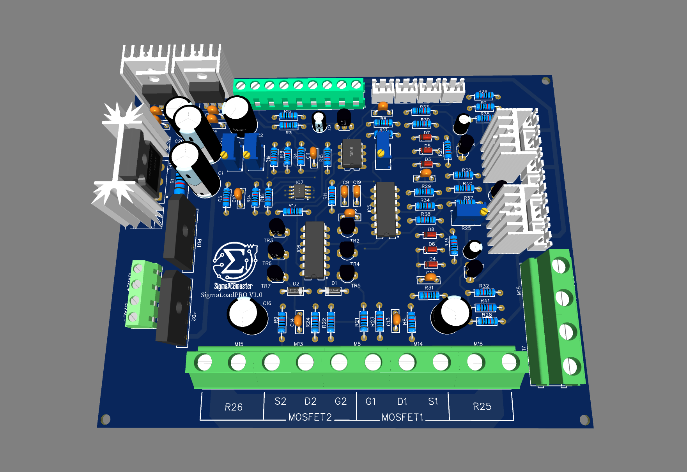

Carico elettronico fino a 800W
Sigma Load è un carico elettronico compatto e affidabile, progettato per testare alimentatori, batterie, convertitori DC-DC e altri dispositivi di potenza in modo preciso e controllato.
Basato su MOSFET di potenza e un controllo a retroazione con amplificatore operazionale, Sigma Load permette di simulare carichi resistivi variabili mantenendo la corrente desiderata anche in presenza di variazioni di tensione in ingresso o carichi resistivi fissi, variando la corrente per mantenere sempre sotto controllo la potenza.
Caratteristiche principali
Applicazioni
Pensato per hobbisti evoluti e studenti, Sigma Load unisce precisione analogica e logica di protezione smart, offrendo uno strumento potente e flessibile per ogni laboratorio elettronico.
